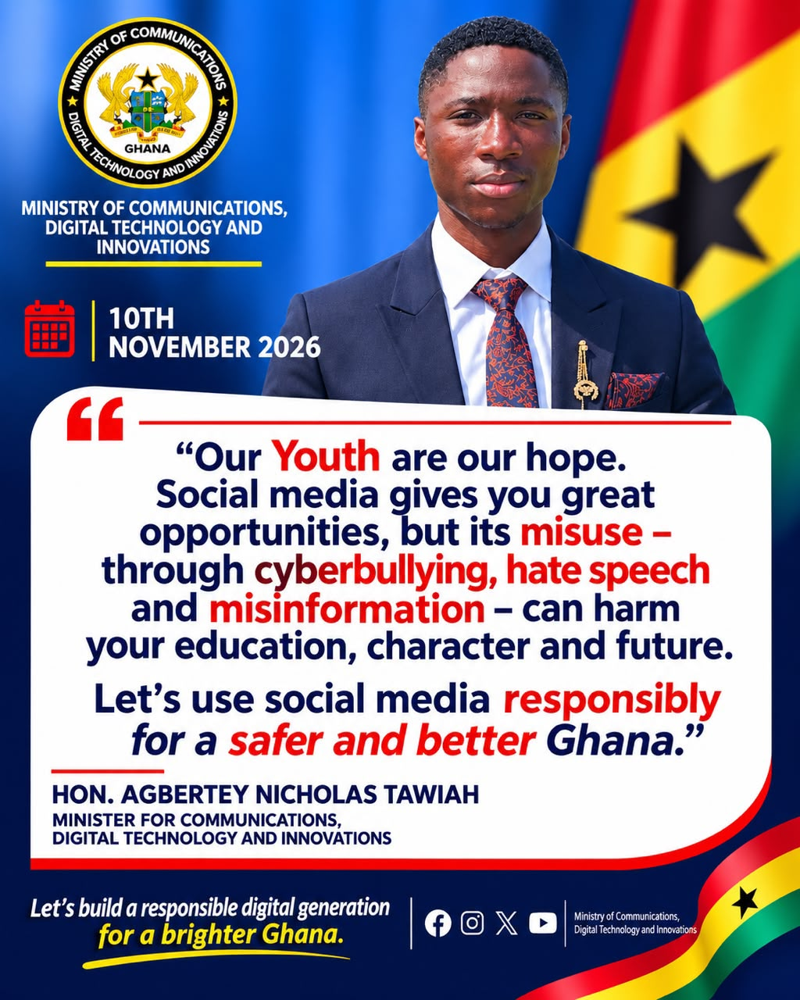

Newsroom
News & announcements.
Announcements and event information from the Ministry.
Official press release · 13 November 2026
Update on Parliamentary Visit, Inauguration and Proposed Ghana@70 Celebration
13 November 2026 · Office of the President & Founder, Youth Parliament of Ghana
The national leadership has issued an update following the Youth Parliament of Ghana’s parliamentary visit on Wednesday, 11 November 2026. The release also communicates a proposal to integrate the official launch and swearing-in ceremony into the Ghana@70 National and International Youth Leadership Week celebrations in February 2027.
Read the full official press release ↗
Event update · 13 November 2026
Launch and Swearing-In: Proposed February 2027 Integration
Latest published position: 13 November 2026 · Youth Parliament of Ghana
The 13 November 2026 press release communicates a proposal to integrate the official launch and swearing-in into the Ghana@70 National and International Youth Leadership Week celebrations in February 2027.
Important: The February 2027 arrangement was described as a proposal for further deliberation. The press release does not confirm a final replacement date or venue. The previously publicised 27 November 2026 date should therefore be treated as under review, not as a confirmed event date.
Members and interested visitors should rely on a subsequent official announcement for the confirmed date, venue and programme arrangements.
Read the full official press release ↗

Digital citizenship · Public awareness · 2026
Responsible Social Media Use: Promoting a Safer Digital Space
10 November 2026 · Ministry of Communications, Digital Technology & Innovations
Social media gives young people powerful tools to communicate, learn, participate in public life and share ideas. These opportunities come with a responsibility to use digital platforms thoughtfully and respectfully.
This public awareness message highlights the importance of rejecting cyberbullying and hate speech, checking information before sharing it, and thinking carefully about the impact of online words and actions.
Every user has a role in making digital spaces safer. Pause before posting, respect people whose views differ from yours, protect personal information, and help stop the spread of misinformation.
Think before you post. Verify before you share. Respect others online.
#ResponsibleSocialMedia #DigitalCitizenship #OnlineSafety #YouthEmpowerment #Ghana